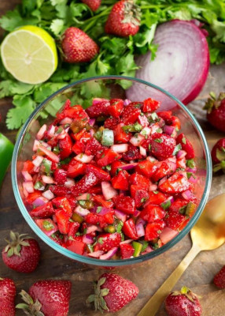

Strawberry Salsa

Description
A sweet salsa that is great with pork and chicken dishes.
Ingredients
- 4 roma (plum) tomatoes, seeded and chopped
- 1 jalapeno peppers, seeded and minced
- 2 cloves garlic, minced
- 1 lime, juiced
- 1 tablespoon olive oil
Directions
- In a large bowl, combine strawberries, tomatoes, chile peppers, garlic, lime juice and oil. Toss all together to mix and coat. Cover dish and refrigerate for 2 hours to chill. Ready to serve!
go to homepage